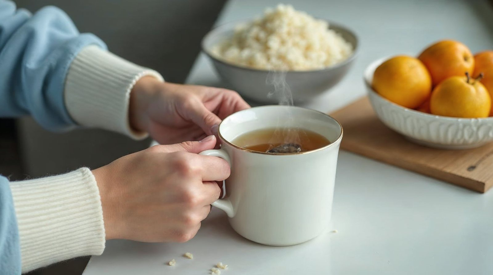
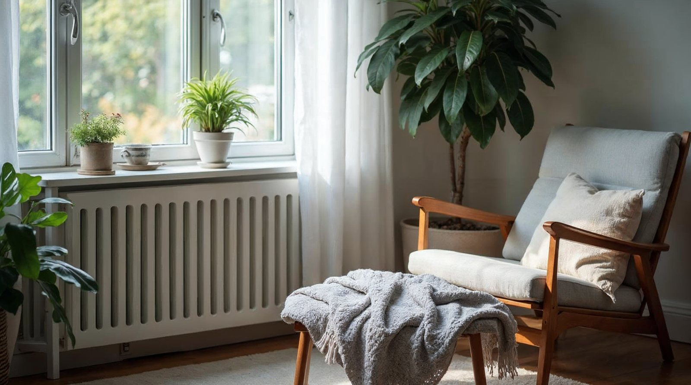

이종호 한의사 감수좋은꿈참사랑한의원 대표원장 (한의사 면허번호 19769)발행 2026-11-23 · 수정 2026-11-26
이 글의 차례
일과 육아를 함께 하며 늘 지쳐 있다면, 하루 일과와 잠, 식사, 몸에서 아픈 곳을 먼저 묻고 작게라도 쉴 틈을 함께 찾습니다. 피로가 오래 이어지면 빈혈이나 갑상선처럼 확인이 필요한 원인이 없는지도 함께 살핍니다. 출근 전 아이를 등원시키고 퇴근 후에는 저녁과 숙제를 챙기다 보면 하루가 끝나, 아픈 곳이 있어도 병원 갈 시간조차 없다는 분이 많습니다.
이런 피로는 하루 이틀 푹 잔다고 풀리지 않는 경우가 많습니다. 쉬는 날에도 아이 일정과 밀린 집안일이 기다리고 있어 몸은 누워 있어도 머리는 계속 다음 일을 챙기고 있기 때문입니다. 그래서 피로의 크기보다 하루 가운데 정말로 내려놓는 시간이 있는지를 먼저 살핍니다.
왜 이런 불편이 생길 수 있나요
- 잠이 부족하거나 아이 때문에 밤에 자주 깨면, 오래 누워 있어도 회복이 덜 된 느낌이 남습니다.
- 끼니를 거르거나 급하게 먹는 날이 이어지면 오후에 기운이 크게 떨어질 수 있습니다.
- 아이를 안고 들고, 집안일을 하며 목·어깨·허리에 통증이 쌓이면 피로가 더 커집니다.
- 빈혈, 갑상선 기능 변화, 우울감처럼 피로 뒤에 다른 원인이 있는 경우도 있습니다.
밤에 아이가 깨서 달래고 다시 눕는 일이 반복되면, 잠의 총량보다 이어서 자는 시간이 짧아지는 것이 더 큰 부담이 됩니다. 깊은 잠에 들 만하면 깨는 일이 몇 달씩 이어지면 아침에 몸이 무겁고 오후에는 머리가 멍해지기 쉽습니다.
몸의 통증도 피로를 키웁니다. 아이를 한쪽 팔로 안고 다른 손으로 일을 하는 자세, 바닥에 쪼그려 앉아 씻기고 놀아 주는 자세가 반복되면 손목과 허리, 무릎에 부담이 쌓입니다. 아픈 곳이 있으면 잠도 얕아져 피로가 다시 커지는 고리가 생깁니다.
단순한 피로와 확인이 필요한 피로는 어떻게 다른가요?
잠을 몰아서 자거나 며칠 쉬었을 때 어느 정도 회복되는 피로라면 생활의 부담에서 오는 피로일 가능성이 큽니다. 반대로 충분히 쉰 뒤에도 몸이 계속 무겁고, 예전보다 숨이 쉽게 차거나 얼굴이 창백해졌다는 말을 듣는다면 빈혈을 확인해 볼 필요가 있습니다.
추위를 유난히 타고 체중이 늘며 변비가 생겼거나, 반대로 두근거림과 손 떨림이 있으면서 체중이 줄었다면 갑상선 기능 검사를 권합니다. 출산 뒤 1년 안쪽이라면 갑상선 기능이 일시적으로 흔들리는 경우도 있어 건강검진 결과를 함께 봅니다.
몸이 지친 것을 넘어 좋아하던 일에도 흥미가 없고, 아침마다 하루가 막막하게 느껴지는 날이 2주 넘게 이어진다면 우울감을 함께 살펴야 합니다. 이런 마음은 의지가 약해서 생기는 것이 아니어서, 필요하다고 판단되면 정신건강의학과 상담도 함께 안내해 드립니다.
먼저 이렇게 여쭙니다
- 하루 중 온전히 쉬는 시간이 얼마나 되나요?
- 잠은 몇 시간 정도, 몇 번 깨며 주무시나요?
- 끼니를 거르거나 아이가 남긴 것으로 때우는 날이 많나요?
- 몸에서 가장 불편한 곳은 어디인가요?
- 최근 건강검진에서 빈혈이나 갑상선 결과는 어땠나요?
- 생리량이 많거나 생리 기간이 길어졌나요?
- 출산하신 지 얼마나 되었고, 지금 수유 중이신가요?
- 가족 가운데 육아와 집안일을 나눌 수 있는 사람이 있나요?
질문이 많아 보여도 진료 시간이 길어지지 않도록 필요한 것부터 짧게 여쭙습니다. 생리량이 많은 분은 빈혈과 피로가 이어져 있는 경우가 있어 생리 이야기도 함께 듣습니다.
피로를 느끼는 방식도 사람마다 다릅니다. 몸이 천근만근 무거운 분이 있고, 몸보다 머리가 멍하고 집중이 안 되는 분이 있고, 작은 소리에도 신경이 곤두서는 분이 있습니다. 내 피로가 어느 쪽에 가까운지 떠올려 보시면 진료 때 이야기를 풀어 가기가 한결 쉬워집니다.
스스로 점검해 보세요
- 아침에 일어날 때 이미 지쳐 있는 날이 일주일에 사흘 넘는다
- 밤에 아이 때문에 두 번 이상 깨는 날이 많다
- 앉아서 제대로 먹는 끼니가 하루 한 번도 안 되는 날이 있다
- 목, 어깨, 손목, 허리 가운데 늘 아픈 곳이 있다
- 쉬는 날에도 마음 편히 누워 있지 못한다
- 작은 일에 예민해지고 나중에 미안해지는 일이 잦다
- 숨이 쉽게 차거나 어지러운 날이 늘었다
앞의 여섯 가지 가운데 여러 개가 해당한다면 생활의 부담을 함께 나눠 볼 때입니다. 마지막 항목이 해당한다면 빈혈이나 다른 원인이 없는지 혈액 검사를 함께 받아 보시길 권합니다.

일상에서 먼저 해 볼 수 있는 것
- 하루 10분이라도 혼자 있는 시간을 정해 두기
- 아침은 간단하게라도 앉아서 먹기
- 집안일 중 줄이거나 나눌 수 있는 것을 가족과 정리하기
- 잠들기 전 휴대폰 대신 가벼운 스트레칭하기
- 주말 하루는 늦잠보다 같은 시각에 일어나 낮잠으로 보충하기
하루 중 쉴 틈은 어떻게 만들 수 있을까요?
바쁜 하루에 따로 쉬는 시간을 내기란 쉽지 않습니다. 그래서 이미 있는 틈을 쉬는 시간으로 바꾸는 쪽을 권합니다. 예를 들어 출근길 지하철에서 휴대폰 대신 눈을 감고 숨을 고르거나, 점심시간 10분을 혼자 걷는 데 써 보는 식입니다.
아이를 재우고 난 밤 시간은 나만의 시간이라 아까워서 늦게까지 깨어 있게 되기 쉽습니다. 하지만 그 시간이 길어질수록 다음 날 더 지칩니다. 일주일에 이틀만이라도 아이와 함께 일찍 잠자리에 드는 날을 정해 보세요.
집안일은 모두 해내려 하기보다 덜 해도 되는 것을 고르는 것이 먼저입니다. 빨래 개기는 다음 날로 미뤄도 되고, 반찬은 한두 가지만 해도 괜찮습니다. 가족과 할 일을 나눌 때는 막연히 도와 달라고 하기보다 '목요일 저녁 설거지'처럼 요일과 일을 구체적으로 정하면 오래 지켜지기 쉽습니다.
몸을 위한 시간도 짧게 나눠 넣어 보세요. 아이 양치를 도와준 뒤 1분 동안 목과 어깨를 천천히 돌리고, 잠들기 전 누운 채로 무릎을 가슴 쪽으로 당겨 허리를 펴 주는 것만으로도 하루 동안 쌓인 뻣뻣함이 조금 풀릴 수 있습니다.
바쁠 때 끼니는 어떻게 챙기면 좋을까요?
아이 밥은 챙기면서 정작 내 끼니는 아이가 남긴 것으로 때우거나 서서 먹는 분이 많습니다. 이런 날이 이어지면 오후 서너 시쯤 기운이 뚝 떨어지고 단 음식이나 커피에 기대게 됩니다.
아침은 5분이면 준비할 수 있는 것으로 정해 두세요. 삶은 달걀, 두유, 바나나, 전날 지어 둔 주먹밥처럼 손이 덜 가는 것을 미리 준비해 두면 출근 준비 중에도 앉아서 먹을 수 있습니다.
점심은 일하는 곳에서 가능하면 자리를 떠나 먹는 것이 좋습니다. 저녁은 아이와 같은 상에 앉아 함께 먹되, 아이 반찬과 별도로 내가 먹을 단백질 반찬 하나를 챙기는 것부터 시작해 보세요.
오후 간식은 과자 대신 견과나 요구르트를 가방에 넣어 두면 퇴근길 허기를 달래기 좋습니다. 커피는 오후 2시 이후로는 줄여야 밤에 아이가 깬 뒤 다시 잠들기가 수월합니다.
주말은 어떻게 보내면 회복에 도움이 될까요?
주말에 밀린 잠을 몰아 자면 그날은 편해도 월요일 아침이 더 힘들어지기 쉽습니다. 일어나는 시각은 평일과 한 시간 안쪽으로 맞추고, 부족한 잠은 오후 이른 시간의 짧은 낮잠으로 보충해 보세요.
주말 가운데 반나절은 가족과 번갈아 아이를 맡고 각자 혼자 쉬는 시간을 가져 보시길 권합니다. 그 시간에 무엇을 해야 한다는 부담 없이 산책하거나 카페에 앉아 있는 것만으로도 다음 한 주를 버티는 힘이 됩니다. 혼자 쉬는 시간에 미안해하지 않으셔도 괜찮습니다. 쉬고 돌아온 부모가 아이에게도 더 너그러워질 수 있습니다.
피로를 줄이려는 노력이 또 하나의 숙제가 되지 않도록, 위의 방법 가운데 이번 주에 해 볼 것 하나만 고르세요. 한 가지가 습관이 되면 그다음을 더하면 됩니다. 지키지 못한 날이 있어도 스스로를 탓하지 마세요. 그런 날이 있는 것이 당연한 시기입니다.
예를 들면 이런 경우입니다
- 예를 들어 출근 전 등원과 퇴근 뒤 하원을 혼자 맡는 분이라면, 하루 일과를 시간대별로 적어 보고 그 가운데 가족이나 주변 도움을 받을 수 있는 칸이 있는지 함께 찾아봅니다.
- 예를 들어 아이를 자주 안아 손목과 허리가 아픈 분이라면, 아이를 드는 자세와 아픈 동작을 직접 보여 주시도록 하고 통증을 먼저 살피면서 피로와 잠을 함께 다룹니다.
- 예를 들어 복직한 지 얼마 되지 않아 일과 육아가 한꺼번에 몰린 분이라면, 복직 전후로 잠과 식사가 어떻게 달라졌는지 여쭙고 적응하는 몇 주 동안 줄일 수 있는 일부터 정리합니다.
얼마나 지켜보고, 언제 상담할까요
- 바쁜 시기가 끝나면 회복될 피로라면 잠과 식사를 챙기며 2~3주 지켜볼 수 있습니다.
- 몇 주가 지나도 아침마다 지쳐 있고, 아픈 곳 때문에 일이나 육아가 버겁다면 상담을 받아 보시길 권합니다.
- 건강검진을 받은 지 오래되었다면 혈액 검사로 빈혈과 갑상선 기능을 함께 확인해 보세요.
한의원에서 함께 살필 수 있는 경우
- 피로가 쌓여 아침에 일어나기 힘든 경우 잠과 식사, 몸의 상태를 함께 살핍니다.
- 목·어깨·허리 통증이 함께 있는 경우 아픈 동작과 자세를 함께 살핍니다.
- 예민함과 무기력이 번갈아 오는 경우 마음의 부담과 생활 리듬을 함께 살핍니다.
좋은꿈참사랑한의원에서는 맥부터 짚으며 하루 일과와 가장 힘든 시간대를 여쭙고, 필요하면 복진 등으로 몸 상태를 더 살핍니다. 통증이 있으면 침, 약침, 추나를, 피로와 잠이 중심이면 생활 리듬 조정과 한약 상담을 상태에 맞게 정하고, 검사가 필요하다고 판단되면 다른 의료기관을 안내합니다.
수유 중이시면 한약 상담 전에 꼭 말씀해 주세요. 토·일·공휴일에도 오후 3시까지 진료해 주중에 시간이 없으신 분도 오실 수 있습니다.
몸이 아픈데 참고 지내도 괜찮을까요?
아이를 돌보다 보면 내 통증은 늘 뒤로 밀립니다. 손목이 시큰해도, 허리가 뻐근해도 아이 일정이 먼저라 참고 지내다가 아이를 들 수 없을 만큼 아파서야 오시는 분이 많습니다.
통증이 쌓이면 잠이 얕아지고, 잠이 얕아지면 피로가 커지고, 피로가 커지면 통증도 더 크게 느껴집니다. 이 고리를 끊으려면 통증이 아직 견딜 만할 때 한 번 살펴보는 편이 좋습니다. 아이를 맡길 곳이 마땅치 않다면 방문 전 전화로 상의해 주세요. 아픈 동작을 휴대폰으로 짧게 찍어 오시면 진료 때 함께 보기 좋습니다.
처음 오시면 어떤 순서로 살피나요?
처음 오시면 가장 힘든 것이 피로인지, 통증인지, 잠인지부터 여쭙고 그날 진료의 중심을 정합니다. 그다음 하루 일과와 잠, 식사, 생리 주기, 최근 건강검진 결과를 차례로 확인합니다.
진맥은 모든 분께 하고, 혀와 배의 상태, 손발의 온기를 함께 살핍니다. 아픈 곳이 있다면 어떤 동작에서 아픈지 직접 움직여 보시도록 해 침, 약침, 추나 가운데 맞는 방법을 고릅니다. 한약 상담은 수유 여부와 복용 중인 약을 먼저 확인한 뒤 필요하다고 판단될 때 진행합니다.
귀가 전에는 다음 진료까지 해 볼 일을 한두 가지로 정해 드립니다. 바쁜 분일수록 목표가 많으면 지키기 어려워, 지킬 수 있는 만큼만 정하는 것이 좋습니다.

이렇게 기록해 오시면 상담이 쉬워집니다
- 평일 하루 일과(기상부터 잠들 때까지)
- 잠든 시간, 깬 횟수, 아이 때문에 깬 일
- 끼니를 거른 날과 주로 먹은 것
- 최근 건강검진 결과지
하루 일과는 시간표처럼 길게 쓰지 않아도 됩니다. 기상, 출근, 퇴근, 아이 재우기, 내가 잠든 시각처럼 큰 마디만 적고, 그 사이에 혼자 쉰 시간이 있었다면 표시해 주세요. 사흘 정도만 적어도 하루 중 가장 버거운 시간대가 보입니다.
아이가 밤에 깬 횟수도 아침에 기억나는 만큼 함께 적어 주세요. 몸이 아팠던 날은 어떤 일을 하고 난 뒤였는지도 한 줄 남겨 두시면 통증을 살필 때 도움이 됩니다.
이런 증상은 먼저 확인이 필요합니다
- 기분이 깊이 가라앉고 아무것도 하기 싫은 날이 2주 넘게 이어지는 경우
- 스스로를 해칠 생각이 들면 ☎ 109로 바로 연락하세요.
이런 신호가 있으면 한의원보다 가까운 병원이나 응급실을 먼저 찾으세요.
함께 읽으면 좋은 글
- 아이를 키우며 몸도 마음도 바닥난 것 같은 육아 번아웃은 어떻게 살피나요?
- 의욕이 없고 번아웃처럼 지칠 때는 한의원에서 무엇을 먼저 묻나요?

여쭙는 것
- 하루 중 온전히 쉬는 시간이 얼마나 되나요?
- 잠은 몇 시간 정도, 몇 번 깨며 주무시나요?
- 끼니를 거르거나 아이가 남긴 것으로 때우는 날이 많나요?
생활에서 해 볼 것
- 하루 10분이라도 혼자 있는 시간을 정해 두기
- 아침은 간단하게라도 앉아서 먹기
- 집안일 중 줄이거나 나눌 수 있는 것을 가족과 정리하기
한의원에서 함께 살필 것
- 피로가 쌓여 아침에 일어나기 힘든 경우 잠과 식사, 몸의 상태를 함께 살핍니다.
- 목·어깨·허리 통증이 함께 있는 경우 아픈 동작과 자세를 함께 살핍니다.
- 예민함과 무기력이 번갈아 오는 경우 마음의 부담과 생활 리듬을 함께 살핍니다.
먼저 확인이 필요한 신호
- 기분이 깊이 가라앉고 아무것도 하기 싫은 날이 2주 넘게 이어지는 경우
- 스스로를 해칠 생각이 들면 109로 바로 연락하세요.
한눈에 보는 표
| 구분 | 핵심 |
|---|---|
| 여쭙는 것 | 하루 중 온전히 쉬는 시간이 얼마나 되나요? 잠은 몇 시간 정도, 몇 번 깨며 주무시나요? |
| 생활에서 해 볼 것 | 하루 10분이라도 혼자 있는 시간을 정해 두기 아침은 간단하게라도 앉아서 먹기 |
| 한의원에서 함께 살필 것 | 피로가 쌓여 아침에 일어나기 힘든 경우 잠과 식사, 몸의 상태를 함께 살핍니다. 목·어깨·허리 통증이 함께 있는 경우 아픈 동작과 자세를 함께 살핍니다. |
| 먼저 확인이 필요한 신호 | 기분이 깊이 가라앉고 아무것도 하기 싫은 날이 2주 넘게 이어지는 경우 스스로를 해칠 생각이 들면 109로 바로 연락하세요. |
자주 묻는 질문
주말에도 진료하나요?
토·일·공휴일에도 09:30~15:00에 진료합니다. 방문 전 전화로 확인해 주세요.
아이와 함께 가도 되나요?
네. 방문 전 전화 주시면 편한 시간을 함께 정해 드립니다.
피곤한 것도 진료 대상인가요?
네. 피로가 일상을 흔든다면 잠과 식사, 몸 상태를 함께 살펴볼 이유가 충분합니다.
진료 시간은 어떻게 되나요?
좋은꿈참사랑한의원은 평일 09:30~20:00(점심 13:00~14:00), 토·일·공휴일 09:30~15:00에 진료합니다.
아픈 곳과 피로를 한 번에 같이 볼 수 있나요?
네. 그날 가장 불편한 것을 먼저 정해 진료하고, 피로와 잠은 문진과 진맥으로 함께 살핍니다.
좋은꿈참사랑한의원은 재진 때 지난번 이야기부터 이어서 여쭙니다. 진료시간과 예약은 오시는 길에서 확인하세요.
어디서 상담받을 수 있나요?
좋은꿈참사랑한의원은 서울 동작구 만양로2길 2 신성빌딩 3층·5층(서울 동작구 상도동, 7호선 상도역 3번 출구 근처)에 있습니다. 한의사 3명(이종호 대표원장, 조영기 수석진료원장, 정원영 진료원장)이 진료합니다. 진료시간은 평일 09:30~20:00(점심 13:00~14:00), 토·일·공휴일 09:30~15:00이며, 방문 전 전화로 확인을 권합니다. 예약은 네이버 예약, 카카오톡 상담, 전화 02-815-7510로 받습니다.
이 글은 일반적인 건강 정보이며 개인의 진단이나 치료를 대신하지 않습니다. 증상이 있거나 복용 중인 약이 있다면 진료를 통해 확인하세요. 치료 효과는 개인마다 다를 수 있습니다.
작성 기준: 일반적으로 알려져 있는 건강 정보를 참고해 정리했습니다(대표원장 감수). 증상 기록은 1~2주 동안 하루 1회, 비슷한 시간에 적어 오시면 지난 상태와 비교하기 쉽습니다.